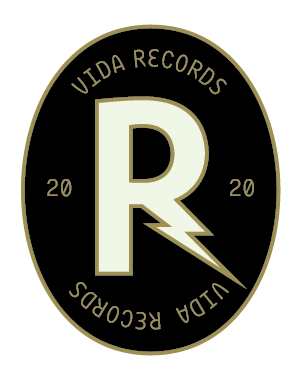

© Socunbohemio, 2026.
Disseny i desenvolupament per Ricard Viñas

Socunbohemio és el projecte musical d’Artur Viñas, una de les veus joves amb més sensibilitat, honestedat i personalitat de la nova escena catalana. Amb una trajectòria construïda a una edat molt primerenca i una evolució artística constant, el projecte s’ha consolidat com una de les propostes amb més projecció de la seva generació.
En aquesta nova etapa, Socunbohemio amplia el seu univers sonor amb una producció més rica, atmosfèrica i ambiciosa, connectant amb referents internacionals com Vampire Weekend, Bon Iver, Mk.gee, Tame Impala, Cameron Winter, Sen Senra i molts més, però mantenint intacta la proximitat emocional i la identitat lírica que han definit el projecte des dels inicis.
El primer single del nou treball, “Un lloc”, ja està disponible i marca l’inici d’un recorregut que anirà revelant moltes sorpreses i notícies importants durant els pròxims mesos.
La presentació oficial d’aquest nou disc a Barcelona serà a la mítica Sala Apolo, el mateix lloc on Socunbohemio va posar punt final a la seva anterior gira. Un retorn especialment simbòlic que arriba en el moment de màxima projecció del projecte i que representarà un nou pas endavant en la trajectòria d’Artur Viñas.